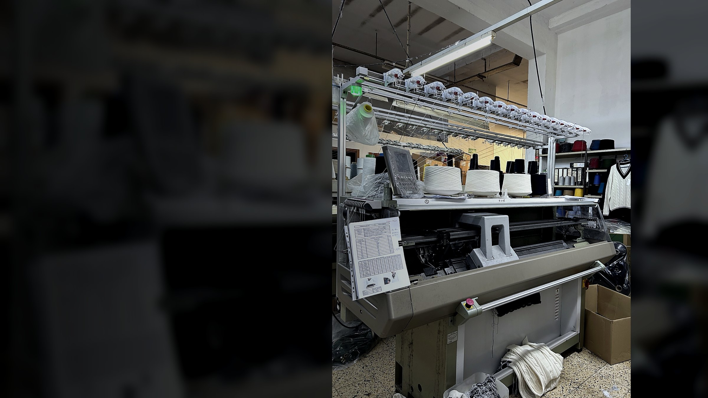
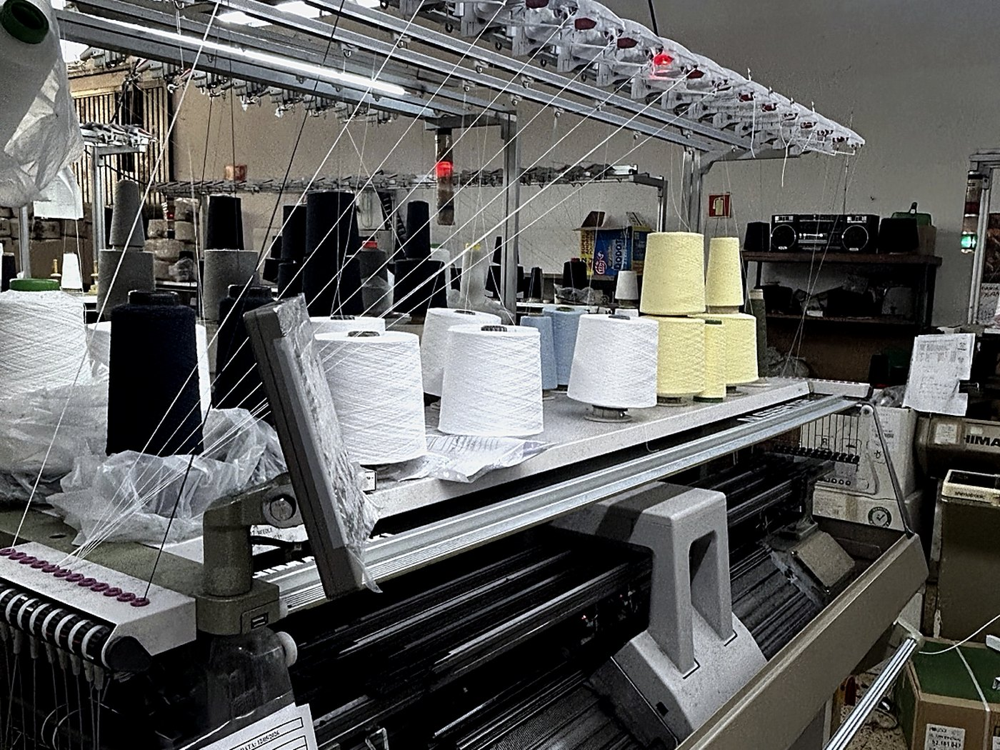
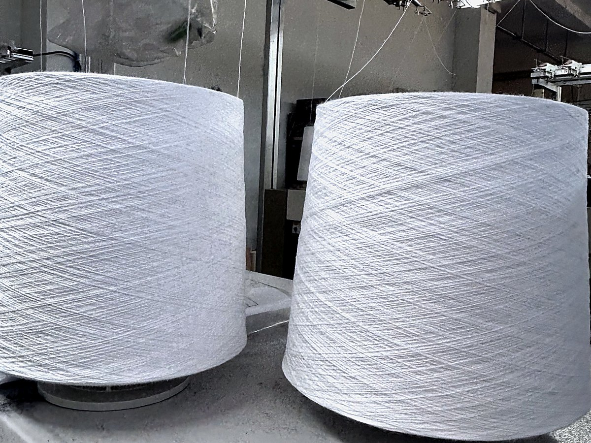
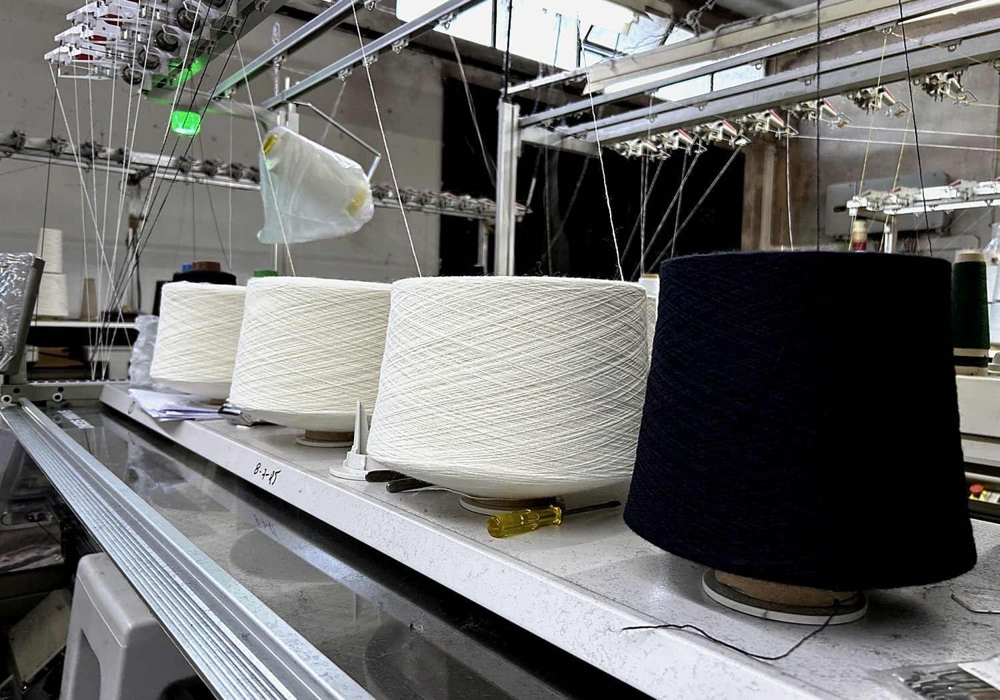
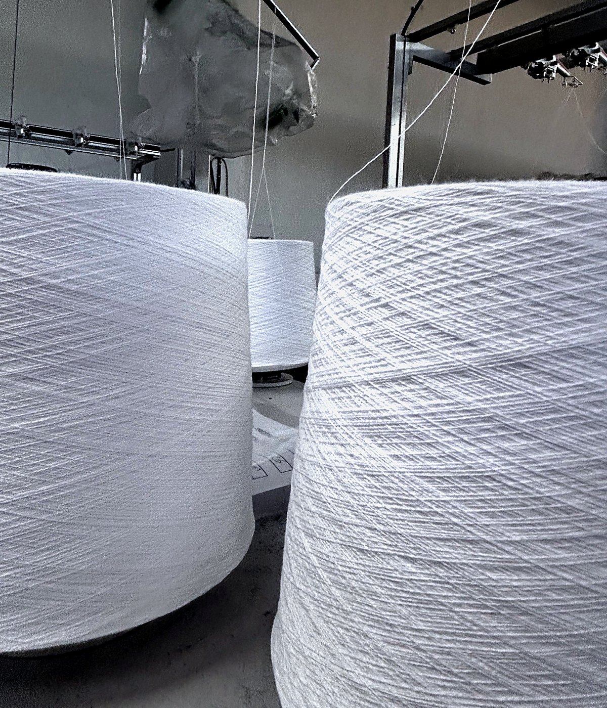

Produção por encomenda com controlo de fio, ponto, composição e acabamento.

Minde, Portugal — desde 1986
Produção Portuguesa de Malhas
Fabricamos peças de malha por encomenda para colégios, empresas, instituições e marcas privadas, com produção direta, personalização e acompanhamento próximo.
Falar connoscoProduzimos malhas para clientes profissionais, com o conhecimento de quem trabalha o produto há várias décadas.


Sobre
Produção têxtil portuguesa desde 1986.
A Rijoma é uma empresa familiar portuguesa, localizada em Minde, especializada na produção de malhas por encomenda.
Trabalhamos com colégios, empresas, instituições e marcas privadas, desenvolvendo peças ajustadas a cada projeto, com atenção à qualidade, à consistência e aos acabamentos.
Produção portuguesa
Malhas por encomenda
Fardamento escolar e profissional
Relação direta com o fabricante

Produção
Capacidade produtiva com flexibilidade de projeto.
A produção combina experiência, equipamento industrial e conhecimento técnico acumulado. Cada peça é desenvolvida de acordo com o pedido do cliente, desde a escolha do fio e da composição até aos acabamentos finais.
Peças de malha para colégios, empresas e instituições, com opções de personalização.
Adaptação de cores, medidas, composições e acabamentos conforme o projeto.

Matéria-prima
A qualidade de cada peça começa na escolha do fio. Trabalhamos com fios europeus de qualidade, selecionados conforme o uso, o toque e os requisitos de cada projeto.
Produtos
Malhas para diferentes projetos e clientes.
Produzimos peças por encomenda, com possibilidade de personalização de cor, composição e acabamento.
Pullovers
Decote em V, gola redonda ou half-zip, conforme o projeto.
Cardigans
Peças com abertura frontal, adaptadas a diferentes usos e composições.
Coletes de malha
Solução versátil para fardamento escolar e profissional.
Half-zips
Peças de malha com fecho parcial, adequadas a uma imagem cuidada e funcional.
Cachecóis e acessórios
Peças complementares em malha para projetos de fardamento.
Peças sob especificação
Desenvolvimento conforme fio, ponto, medidas, composição e acabamento.
Personalização
Peças desenvolvidas conforme o projeto.
Bordado
Aplicação de logótipo ou identificação no peito, manga ou corpo da peça.
Etiqueta personalizada
Possibilidade de etiqueta própria, conforme especificação do cliente.
Cores e contrastes
Cores, riscas e contrastes ajustados à identidade visual do projeto.
Composição de fio
Diferentes composições disponíveis conforme uso, toque e requisitos da peça.
Acabamentos
Punhos, barras, golas, cotoveleiras e zips adaptados ao desenho da peça.
Quantidades
Condições definidas conforme tipo de peça, composição e volume da encomenda.
Contactos
Vamos falar sobre o seu projeto?
Para pedidos de produção, fardamento escolar, corporativo ou institucional, entre em contacto diretamente com a Rijoma.
Email
geral@rijoma.pt
Telefone
+351 249 840 603
Morada
R. Cândido Alves Fiel, 345
2395-140 Minde, Portugal
2395-140 Minde, Portugal
Schoolwear
Pullovers, cardigans, coletes e half-zips para colégios e escolas.
Fardamento corporativo
Peças de malha para empresas e instituições com identidade visual própria.
Marcas privadas
Produção por encomenda com etiqueta e especificação do cliente.